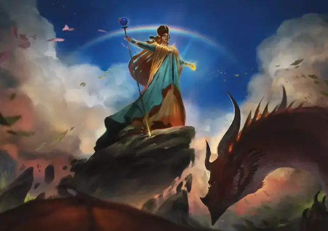

Царственное величие Йоланды
Yolande’s Regal Presence
5 уровень, Очарование

Время сотворения Действие
Дистанция На себя
Компоненты В, С, М (миниатюрная тиара)
Длительность Концентрация, вплоть до 1 минуты
Подклассы Клятва славы (Паладин)
Вы окружаете себя неземным ореолом в виде 10-футовой Эманации. Каждый раз, когда эта Эманация входит в пространство видимого вами существа, или когда видимое вами существо входит в Эманацию или заканчивает в ней ход, вы можете заставить это существо совершить спасбросок Мудрости; при провале оно получает 4к6 Психического урона и состояние Опрокинутый, и вы можете оттолкнуть его от себя на расстояние вплоть до 10 футов, а при успехе цель только получает половину этого урона. Каждое существо может совершать этот спасбросок только раз в ход.